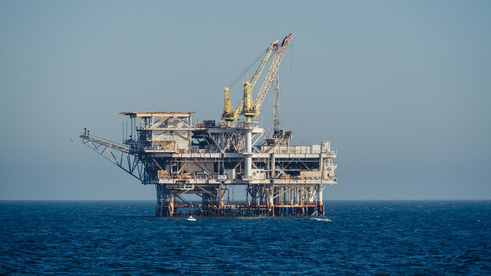

Analyse
Brent verliert binnen zehn Tagen mehr als ein Fünftel: Was das für Exxon, Shell und BP heißt
Der Ölpreis fällt auf den tiefsten Stand seit Ende August, weil Trump neue Angriffe auf den Iran für unwahrscheinlich hält. Der Markt ist besser versorgt, doch die Lage am Golf bleibt unsicher. Für die Dividenden der Ölkonzerne zählt jetzt der Puffer aus dem dritten Quartal.

Kurz gesagt
Kern: Der Markt preist eine ruhigere Lage am Golf ein, und die Versorgung ist besser als gedacht. Die Ölkonzerne gehen mit einem Puffer in diese Phase.
- Preis: Brent schloss am Montag bei 92,57 Dollar (−5,9 %), in der Vorwoche waren es −16 %.
- Angebot: Die OPEC fördert mehr, die Nachfrage gibt bei hohen Preisen nach, der Überschuss liegt bei rund 1,4 Mio. Barrel pro Tag.
- Konzerne: Die Pläne von BP und TotalEnergies für das Schlussquartal rechnen mit mehr als 100 Dollar.
Ein Satz aus dem Weißen Haus bewegt den Markt
Am Sonntag erklärte Donald Trump, neue Angriffe auf den Iran seien sehr unwahrscheinlich, solange die Gespräche zur Beendigung des Konflikts vorankommen. Brent schloss am Montag 5,75 Dollar tiefer bei 92,57 Dollar und gab nach Handelsschluss um mehr als einen weiteren Dollar nach, auf den tiefsten Stand seit Ende August. US-Rohöl (WTI) verlor 4,4 % auf 86,85 Dollar. In der Vorwoche war Brent um 16 % gefallen, der stärkste Wochenverlust seit Beginn der Corona-Pandemie. Vom Hoch bei knapp 118 Dollar Ende Oktober fehlen damit mehr als 20 %.
Der Markt setzt auf Diplomatie, entwarnt ist die Lage am Golf damit noch nicht. Beide Seiten meldeten zuletzt Treffer auf Schiffe in oder nahe der Straße von Hormus. Teheran will nach Angaben eines Sicherheitsbeamten nur verhandeln, wenn Washington sieben Bedingungen aus einem Interimsabkommen vom Juni erfüllt, und US-Vertreter wie auch Diplomaten am Golf bezweifeln einen baldigen Abschluss. Die Huthi bekannten sich zu einem Angriff auf das Aramco-Verwaltungsgebäude in Riad, an der saudischen Ost-West-Pipeline brach nach einem Treffer ein Feuer aus, ohne den Betrieb zu stören.
Am Abend schoben unbestätigte Meldungen den Preis weiter nach unten. Der Rohstoffanalyst Rory Johnston fasst sie in einem Beitrag auf X zusammen: Es soll Absprachen über die Rückkehr von IAEA-Inspektoren geben, die USA sollen eine Urananreicherung im Iran bis 3,67 % zulassen, und Teheran habe angeblich zugestimmt. Ausgangspunkt ist eine Meldung des Senders Al Arabiya, ein katarisch-pakistanischer Vorschlag öffne den Weg zu ernsthaften Verhandlungen zwischen Washington und Teheran wieder. Bestätigt ist davon bisher nichts. Brent fiel zeitweise auf rund 91 Dollar, gut 7 % unter dem Freitagsschluss von 98,32 Dollar.
Die Versorgung ist besser, als die Preise zuletzt nahelegten
Dazu passt der Blick auf die physische Seite des Marktes. Morgan Stanley verweist darauf, dass Dated Brent, der Preis für tatsächlich gehandelte Ladungen, unter den Terminkontrakt gerutscht ist. Das spricht für reichlich Angebot. JPMorgan schätzt den weltweiten Überschuss im Oktober auf rund 1,4 Mio. Barrel pro Tag. Die OPEC steigerte ihre Förderung im Oktober um 1,4 Mio. auf 22,9 Mio. Barrel pro Tag, vor allem Saudi-Arabien, Kuwait und der Irak, obwohl die Exporte weiter eingeschränkt sind. Der Irak will sein Öl künftig über eine Route nahe Oman durch die Straße von Hormus schicken. Hinzu kommt, dass die Nachfrage bei den hohen Preisen nachlässt.
Ein Gegengewicht bleibt: Die strategische Ölreserve der USA ist auf 279,5 Mio. Barrel gefallen, den niedrigsten Stand seit Oktober 1982. Wenn der Konflikt wieder eskaliert, ist dieser Puffer klein.
Was das für die Dividenden der Ölkonzerne bedeutet
Die Quartalsberichte zeigen, womit die Konzerne gerechnet haben. Brent lag im dritten Quartal im Schnitt bei 97 Dollar, im zweiten bei 104 Dollar. BP plant das Schlussquartal mit 110 Dollar je Barrel, TotalEnergies sah den Preis auch zu Beginn des vierten Quartals über 100 Dollar. Der aktuelle Preis liegt darunter. Hohe Gewinne kamen zuletzt allerdings weniger vom Rohöl als von den Margen in den Raffinerien, bei ExxonMobil, Shell und TotalEnergies. Wie sich diese Margen bei fallenden Rohölpreisen entwickeln, zeigen erst die Zahlen für das vierte Quartal.
Für die Ausschüttungen spricht der Puffer, den die Konzerne aufgebaut haben. Sie steckten nur 20 bis 40 % ihres operativen Cashflows in Investitionen, die Nettoschulden sanken bei BP, TotalEnergies und Chevron um 27 bis 38 %, und die Dividenden stiegen nur um 4 bis 6 %. Die Rückkäufe sind der bewegliche Teil, sie hängen am Cashflow. Wer Ölwerte wegen der Dividende hält, kann sich auf diesen Puffer stützen. Ob er bei einem Brent-Preis um 90 Dollar über mehrere Quartale reicht, zeigen die nächsten Berichte, und das hängt an der Lage am Golf. Keine Anlageberatung.
Quellen
- Reuters, „Oil down more than $7 a barrel in post settlement trade as Trump signals restraint on Iran" (9.11.2026, über Investing.com)
- Rory Johnston (Commodity Context), Beitrag auf X (9.11.2026)
- Gulf News, „Crude slides toward $93, WTI drops to $87 as Trump rules out immediate Iran strikes" (5.11.2026)
- Eigene Auswertung der Q3-Berichte, siehe Big Oil verdient am Krieg, tilgt aber zuerst Schulden
Hinweis: Dieser Text dient der allgemeinen Information und ist weder Anlage-, Steuer- noch Rechtsberatung. Kapitalanlagen sind mit Risiken verbunden, bis hin zum Totalverlust.